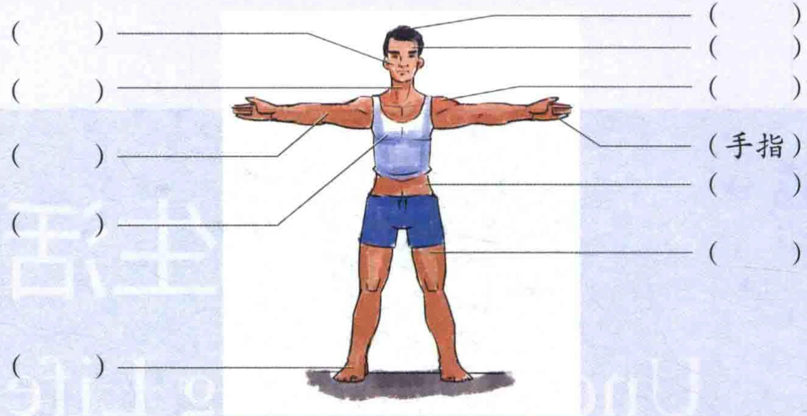
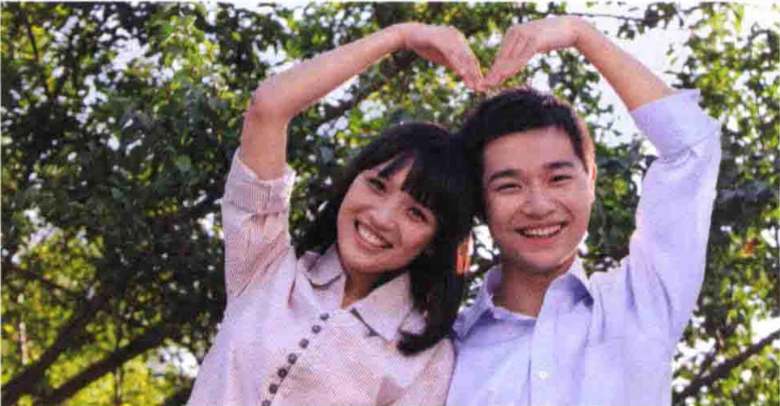

爱的细节Details of LoveПодробности любви1热身Warm-upРазминка你知道人体各个部位用汉语怎么说吗？请试着为下图这些部位填上中文名称。Знаете ли вы, как по-китайски называются части тела? Попробуйте подписать их на схеме.

(палец руки)2你知道哪些与说话或口部动作有关的动词？请写在下面的横线上，并说说它们是什么意思。Какие глаголы, связанные с речью или движениями рта, вы знаете? Запишите их на строках ниже и объясните их значение.本课生词中的：抱怨Из слов урока: 抱怨 — жаловаться其他你知道的：Другие знакомые вам слова:课文TextТекст爱的细节Подробности любви
（662字）
01-1电台要选出一对最恩爱的夫妻。Радиостанция хочет выбрать самую любящую супружескую пару.对比后，有三对夫妻入围。После сравнения в финал вышли три пары.

评委叫第一对夫妻说说他俩是如何恩爱的。妻子说，前几年她全身瘫痪了，医生说她站起来的可能性很小。别人都觉得她的丈夫会跟她离婚，她也想过要自杀。但丈夫一直鼓励她，为她不Жюри попросило первую пару рассказать, как им удаётся так любить друг друга. Жена рассказала, что несколько лет назад всё её тело было парализовано и врачи считали, что она вряд ли сможет снова встать. Все думали, что муж разведётся с ней; она даже думала о самоубийстве. Но муж постоянно поддерживал её и ради неё…21生词Слова урока 01-21. 细节xìjién. detailдеталь2. 电台diàntáin. radio stationрадиостанция*3. 恩爱ēn'àiadj. loving (of a couple)любящие супруги4. 对比duìbǐv. compareсравнивать*5. 入围rùwéiv. be shortlistedвыйти в финал*6. 评委píngwěin. judge; panel memberчлен жюри7. 如何rúhépron. howкак8. 瘫痪tānhuànv. be paralyzedбыть парализованным9. 离婚líhūnv. divorceразвестись10. 自杀zìshāv. commit suicideпокончить с собой